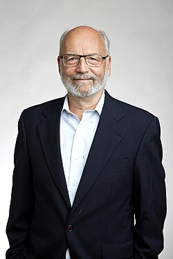

Adi Shamir | |
|---|---|
עדי שמיר | |
 Shamir in 2018 | |
| Born | July 6, 1952 Tel Aviv, Israel |
| Education | Tel Aviv University (BSc) Weizmann Institute of Science (MSc, PhD) |
| Known for | RSA Feige–Fiat–Shamir identification scheme differential cryptanalysis Shamir's secret sharing |
| Awards |
|
| Scientific career | |
| Fields | Cryptography |
| Institutions | Weizmann Institute Massachusetts Institute of Technology |
| Thesis | The fixedpoints of recursive definitions[2] (1976) |
| Zohar Manna[3] | |
Doctoral students | Eli Biham Uriel Feige Amos Fiat[3] |
| Website | www |
Adi Shamir (Hebrew: עדי שמיר; born July 6, 1952) is an Israeli cryptographer and inventor. He is a co-inventor of the Rivest–Shamir–Adleman (RSA) algorithm (along with Ron Rivest and Len Adleman), a co-inventor of the Feige–Fiat–Shamir identification scheme (along with Uriel Feige and Amos Fiat), one of the inventors of differential cryptanalysis and has made numerous contributions to the fields of cryptography and computer science.[4] In 2002, Ron Rivest, Len Adleman, and Shamir won the ACM Turing Award.[5]
Adi Shamir was born in Tel Aviv. He received a Bachelor of Science (BSc) degree in mathematics from Tel Aviv University in 1973 and obtained an MSc and PhD in computer science from the Weizmann Institute in 1975 and 1977 respectively.[3] He spent a year as a postdoctoral researcher at the University of Warwick and did research at Massachusetts Institute of Technology (MIT) from 1977 to 1980.
In 1980, he returned to Israel, joining the faculty of Mathematics and Computer Science at the Weizmann Institute.[6] Starting from 2006, he is also an invited professor at École Normale Supérieure in Paris.[6]
In addition to RSA, Shamir's other numerous inventions and contributions to cryptography include the Shamir secret sharing scheme, the breaking of the Merkle-Hellman knapsack cryptosystem, visual cryptography, and the TWIRL and TWINKLE factoring devices. Together with Eli Biham, he discovered differential cryptanalysis in the late 1980s, a general method for attacking block ciphers. It later emerged that differential cryptanalysis was already known — and kept a secret — by both IBM[7] and the National Security Agency (NSA).[8]
In 1984, Shamir introduced the concept of identity-based cryptography, in which a user's public key can be derived from a unique identifier such as an email address.[9]
In 1986, together with Amos Fiat, he devised the Fiat–Shamir heuristic, a widely used method for converting interactive identification protocols into digital signature schemes.[10]
Together with Rivest and Adleman, Shamir co-founded RSA Security, the company behind the annual RSA Conference held since 1991.[11][5]
With Alex Biryukov and David Wagner, he presented in 2000 a real-time cryptanalysis of A5/1, the stream cipher used to encrypt GSM mobile phone communications.[12]
In 2001, with Ron Rivest and Yael Tauman, he introduced the concept of ring signatures, which allow a member of a group to sign a message without revealing which member produced the signature.[13][14] The same year, together with Scott Fluhrer and Itsik Mantin, he published a key-recovery attack on the RC4 stream cipher, known as the Fluhrer–Mantin–Shamir attack, which demonstrated a practical weakness in the Wired Equivalent Privacy (WEP) protocol then used to secure Wi-Fi networks.[15]
Shamir has also developed a range of side-channel attacks on cryptographic implementations, including cache attacks and acoustic cryptanalysis; in 2014, together with Daniel Genkin and Eran Tromer, he demonstrated the extraction of full 4096-bit RSA keys from a laptop using the sound it emits during decryption.[16][17]
Since the late 2010s, Shamir has also studied the security of machine learning systems, co-authoring work on the theory of adversarial examples, including the "Dimpled Manifold Model" of how neural network decision boundaries evolve during training,[18] and on cryptanalytic techniques for extracting the parameters of neural network models.[19]
In March 2019, Shamir was unable to attend the RSA Conference in San Francisco, where he traditionally appeared on the Cryptographers' Panel, after his application for a US visa went unanswered for two months; addressing the conference by video, he suggested that the research community reconsider where it holds its scientific conferences.[20][11]
Beyond cryptography, Shamir has made contributions to computer science more broadly, such as finding the first linear time algorithm for 2-satisfiability[21] and proving, building on work of Carsten Lund, Lance Fortnow, Howard Karloff, and Noam Nisan, that the complexity classes PSPACE and IP are equal.[22][23]
"All text published under the heading 'Biography' on Fellow profile pages is available under Creative Commons Attribution 4.0 International License." --Royal Society Terms, conditions and policies at the Wayback Machine (archived 2016-11-11)
{kind=link}